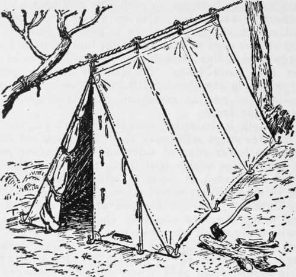
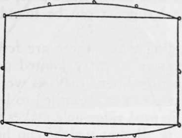
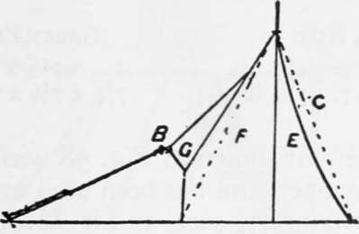
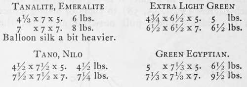
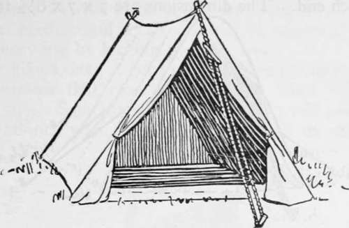
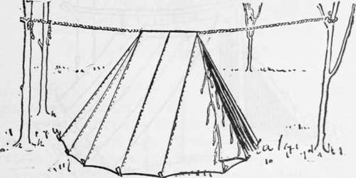
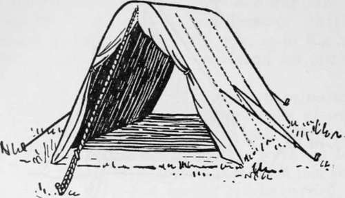

Types Of Light Tents. Part 5
Description
This section is from the book "Camping And Woodcraft", by Horace Kephart. Also available from Amazon: Camping and Woodcraft.
Types Of Light Tents. Part 5
If sod- cloth is desired, a breadth of cloth 7 1/2 feet long split in three strips will make about a 10-inch sod cloth if attached to lower edge of sides and back before putting on a heavy tape which will finish the lower edge. No sod-cloth is needed at front as wings will turn in sufficient in all positions except when fully extended.
For light tent, flap-ties are best of tape and should be spaced along the free edges of each wing and also at iine where edges fall when overlapped so as to make front bottom line of tent measure 7 1/4 feet. Wings need hem or tape for free edges. A 1/8-inch braided cord 15 feet long is needed from peak where it can be attached to a metal ring just too large to pull through the peak ring. From this inside ring it is well to lead like cords down to the back corners of the tent and out through eyelet-holes through the sod-cloth just under the corner peg-loops. These two add to the trimness of tent, especially if of very light material, and can be run to front corners as well, if desired.
Material
36-inch wide stuff ..........................2oT/^ yards, |
J/2-inch tape ..............................75 feet. |
^4-inch tape for bottom edge................23 feet. |
Vs cord, peak 15 feet j.................. feeL V% cord 2 back seams 25 J |
Wedge Or "A" Tents
The wedge tent is an " old stand-by " for those who go where portages must be made or camp shifted every day or two. It is light, cheap, easy to pitch with or without poles, and is well adapted to uneven ground.
In wooded country the camper often may find tw*o trees or saplings from which to stretch a rope, above the level of his head, where it is out of the way. The tent is then pegged out and suspended by its ridge from the rope. This is a quick and satisfactory 11 set " in level forest. On rough ground it may be hard to find a place for the tent with trees growing just where you want them.
Fig. 53. Wedge Tent, Outside Ridge Rope.
Common wedge tents are made with rope running through, under the ridge. The ridge then sags in what engineers call a catenary curve. This makes the sides sag inward, reducing the roominess all around, and the wind makes matters worse. A better plan is to have tapes on the outside of the ridge (Fig. 53), run the rope high and taut, then tie the middle tapes closer to the rope than the outer ones.
The bottom of a wedge tent with rope ridge should be pegged in such way that the sides will be in arcs of a circle, instead of straight along the ground (Fig. 54) : this takes up slack. The ground-cloth, if there is one, should be cut accordingly. The thinner the material, the more a tent will sag when erected without a ridge pole. Partially to obviate this, and to stiffen the tent in a gale, it is a good scheme to attach parrels (Figs. 55, 58) to ropes or strong seams in the sides. These pull outward and turn the wedge into a semi-wall tent. Referring to Fig 55, C shows the theoretically straight side of a wedge tent and E the actual inward sag from ridge droop and wind pressure. The dotted line F indicates the opposite side without parrels, and A is the same wall held out and made taut by the parrels BG. The illustration is adapted from one by T. H. Holding, of London.
Fig. 54. Pegging Bottom of Tent.
Fig. 55. Side Parrels.
Where no trees stand conveniently, a forked stake can be placed at each end of the tent, the rope run over the crotches and staked out as a guy fore and aft; but the front guy is much in the way. It is better to set up shears and a ridge pole, as in Fig .11. Often a natural support can be found for one end of the pole.
When traveling where there are few or no trees, it will be necessary to carry jointed poles of wood, steel, or bamboo. There may as well be three of these, so that two can be straddled to leave the doorway free. A jointed ridge pole makes the tent stand trimmer; but, if all that weight can be carried, the party had better take a wall tent and be comfortable.
Wedge tents are not recommended in sizes larger than about 7 x 7 x 7 ft. Weights of a few examples are as follows:
The alpine tent shown in Fig. 58 was designed by Edward Whymper, and has been used by many other famous mountaineers, such as Sir Martin Conway, Douglas Freshfield, Dr. Hunter Workman, and the Duke of the Abruzzi, for exploration among the highest mountains of the globe. It is made of Willesden canvas or drill, with a sewed-in ground-sheet, and a " sill " at the door, to cut out draughts ?<nd ground chill. Few pegs are required. When the floor is stretched taut, every peg finds its proper place. The poles form shears at each end, over which the ridge rope is guyed out fore and aft. This is a very stanch "set." The standard size if 7 x 7 x 6 1/2 ft.
Fig. 56. Whyraper Alpine Tent.
Modified Wedge Tents
An angular lap or extension may be added to the lower edge of each door flap to serve as a wind shield for a cooking fire in bad weather. If the rear end of a wedge tent is made rounded instead of square, extra room foi duffle is provided, with little additional weight.
The Hudson Bay tent (Fig 57) saves weight by having both ends rounded and the ridge short. It does not sag so much as a regular wedge tent, and is more stable in a wind, but affords less head-room.
Fig. 57. Hudson Bay Tent.
To get more head-room in a tent without walls, the Ross alpine tent (Fig. 58) is fitted over a sectional bent frame. It has side parrels, and a door at each end. The dimensions are 7 x 7 x 6 1/2 ft.

Continue to: